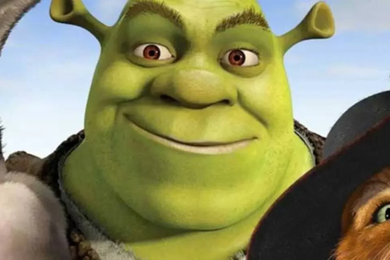
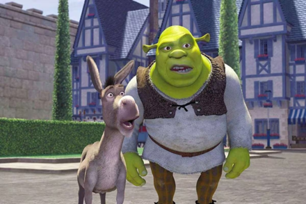

<!DOCTYPE html>
<html lang="pt-br"> 

</html>

     <head> 

           <title>tudo errado</title>

     </head>

      <header>

        

        <h1>Shrek Para Sempre</h1>

      </header>

      <main> 
       
        <p>Com o lançamento de Shrek para sempre, quarto e último filme sobre a saga do adorável ogro, a Dreamworks finaliza mais uma franquia de sucesso que não conseguiu superar a hegemonia geral da Disney/Pixar na competitiva indústria de animação, porém adicionou um toque de humor irreverente à uma inesquecível "quadrilogia" ao usar a metalinguagem dos contos e personagens infantis consagrados pela Disney e a junção de elementos mais pop satíricos para subverter a animação de uma forma mais cool e despojada, e dar um tom simpático à paródica crítica aos estúdios Disney/Pixar usando um casal que inverte o conceito de beleza física do herói e da bela princesa: Shrek e Princesa Fiona, dois ogros corajosos e rebeldes, donos de um caráter virtuoso, mas feios de doer. Diferente da Pixar, a Dreamworks ainda não tem a habilidade de humanizar a animação e roteirizar questões mais intimistas como fez a Pixar em Toy Story 3, logo Shrek incomoda mais o background ' de histórias idealizadas' da Disney, mas ironicamente não se afastou do happy end familiar no último capítulo de Shrek.</p>

      

       <p>acima você pode ver o Shrek e o gato de botas no canto. </p>

       <p>"Ao rever recentemente Shrek Para Sempre, me diverti muito (de novo!) com todas as referências que a série tinha, fazendo paródia de outros filmes, principalmente as animações da Disney e outros contos de fada" Diz Marcelo Forlani sobre o filme.</p>

       <h1>Shrek 5 quando?</h1>

       <p>Quase treze anos após Shrek para Sempre, a Dreamworks confirmou que o ogro mais amado do cinema estará de volta em Shrek 5. Porém, a ótima notícia para os fãs vem acompanhada de um pequeno problema: a princesa Fiona pode não retornar. Apesar de o estúdio ter confirmado o retorno de parte do elenco original, a volta de Cameron Diaz, intérprete de Fiona, é incerta, apontou o site Screen Rant. Isso porque em 2014, após participar de Annie, a atriz se afastou das telas e decidiu dar um tempo na carreira. Fonte: Adoro Cinema</p>
       
       

      </main>

      <footer>

        <h1>Referências</h1>

        <a href="https://www.dreamworks.com/" target="_blank">DreamWorks</a>

        <a href="https://www.adorocinema.com/noticias/filmes/noticia-1000023625/" target="_blank">AdoroCinema</a>

      </footer>

    
    
</html>     
 